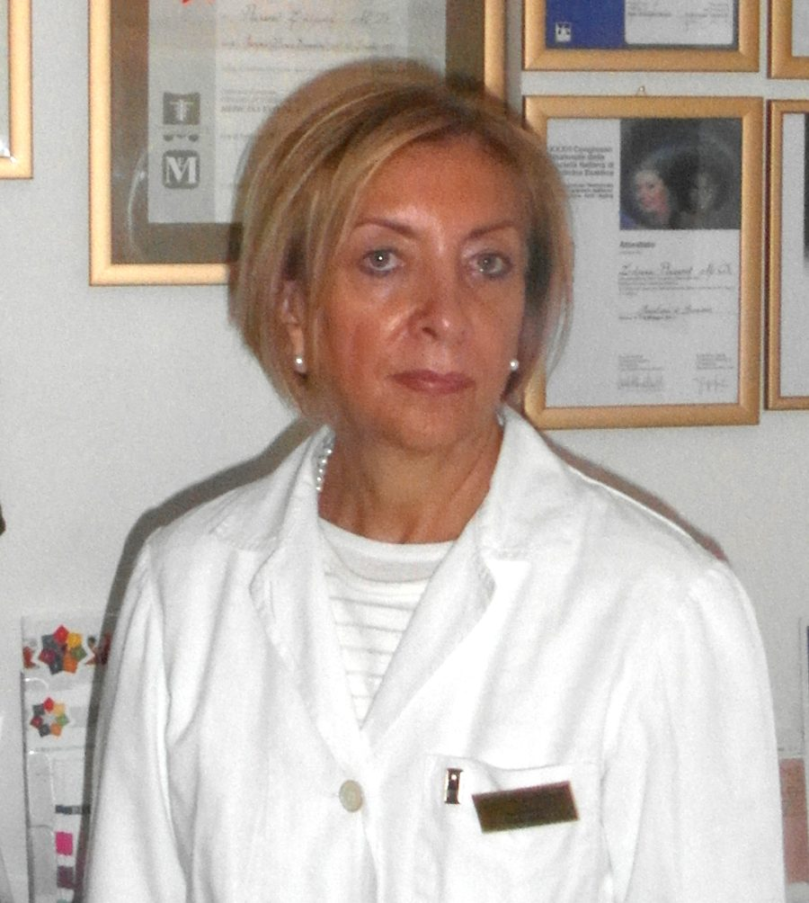

dott.ssa Ljiljana Plužarev
Medico chirurgo, medico estetico
Studio di Medicina Estetica e Dietologia, Trento
- Check-up medico estetico
- Check-up cutaneo
- Prescrizione cosmetologica personalizzata

Riceve in Via Santa Croce 25, Trento
Medico chirurgo, medico estetico
Studio di Medicina Estetica e Dietologia, Trento

Riceve in Via Santa Croce 25, Trento
Rughe e invecchiamento cutaneo, cellulite, adiposità localizzate, sovrappeso, acne, macchie cutanee anche da invecchiamento, rilassamento cutaneo, smagliature, capillari, iperidrosi, xantelasmi, fibromi, verruche.
Ljiljana Plužarev, medico chirurgo e medico estetico.
Laurea in Medicina e Chirurgia a Sarajevo, riconosciuta dall'Università di Perugia nel 1997.
Iscritta all'Albo dei Medici Chirurghi della Provincia di Trento, numero 3304.
Diploma con lode della Scuola quadriennale di Medicina Estetica della Fondazione Internazionale Fatebenefratelli di Roma, con una tesi sulla terapia dell'iperidrosi con tossina botulinica.
Nel comitato scientifico delle Prime Giornate di Medicina Estetica in Trentino Alto Adige, al Grand Hotel Trento.
Ha lavorato in Medicina Interna all'Ospedale Universitario di Sarajevo, come coordinatrice alla RSA «Margherita Grazioli» di Trento, alle Case di Cura «Regina» ed «Eremo» di Arco, all'Ospedale S. Camillo e alla Casa di Cura «Villa Bianca» di Trento.
È coordinatrice per il Trentino Alto Adige dell'Accademia Italiana di Medicina Estetica (AIdME) e della Società Italiana Radiofrequenza Non Ablativa (S.I.R.N.A.), di cui è socia fondatrice, e socia della Società Italiana di Medicina Estetica (S.I.M.E.).